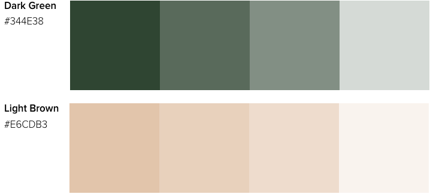

Libro Cafe
Project Background
Libro Cafe is a modern-day cafe that introduces the novelty of reading literature and lounging in a cafe. Guest will appreciate the warm and relaxing environment that Libro Cafe offers. The word Libro is inspired by the Spanish word for “book”. The app is an online shopping app that helps regular customers and new customers of Libro Cafe to skip the lineup through contactless shopping. I first started the project with James Halin for the branding part in 2019 fall. I contributed to the logo design and creating visual guidelines. Later, when COVID-19 happened, I saw a lot of small businesses in Vancouver doing their websites for online shopping. Inspiring by that, I created the shopping app by myself in 2020 Fall. On this page, the first part is about branding, and the second part is about the app.
- Duration:
3 weeks, 2019 Fall - Contribution:
UX research UI visual design, Prototype - Tools:
Figma, Photoshop, Illustrator - Deliverable:
Prototype
Click to see the prototype
The Logo
Our core value is to provide a place where guests can feel welcomed and warm. Guest can study, read, socialize, and most importantly, feel like they are at home.
Logo Sketch
Final Logo
The simple but friendly logo invites guests to a warm and welcoming environment. It also generates curiosity and makes guest visit the cafe. The overall roundness of the design captures the friendliness and soft tones. Using the Gestalt principles, the logo’s shape uses closure to showcase the shape of a coffee cup and book. The object is not completely enclosed but enough of the shape is indicated to be perceived as a book and cup.
Logo Colour
I chose a dark green and light brown colour palette. The dark green colour gives people a feeling of calm which makes people feel enjoying reading. The light brown colour is the colour of coffee, and it also adds some warmness to the logo. Combining these two colour, it fits our branding value.
Typeface
The typeface we decided on for our logotype is Circular Standard. It’s an evolution from Paul Renner’s Futura font; Circular brings it to a modern era. It’s a simple and round Sans Serif that brings warmness and softness to any design.
Application


The App
Because of COVID-19, many small businesses in Vancouver have built their online shopping site. Hence, I created the online shopping app for Libro Coffee.
Target Users
Main users will be regular customers of Libro coffee;
new customers who live nearby Libro coffee.
The Problem
Because of Covid-19, the regular customers of Libro Coffee prefer less contact with others such as cashiers at Libro Coffee and people in the line. However, they still want to enjoy the good coffee and food from Libro Coffee.
The Goal of the App
The app helps users make contactless orders in Libro Cafe and skip the lineup, so the users can still enjoy the food and coffee without too much contact with strangers.
The Challenge
What makes this shopping app different from the food online pickup app?
This is the most challenging part of creating the app because there are other food delivery apps that offer online order and pick-up at store service. After conducting research on other store apps such as Starbucks and Tim Hortons, I thought of a Royalty system to attract users using the Libro Cafe shopping app.
The prototype
Click to see the prototype
Reflection
As a designer, it is important to balance simplicity and elegance. We wanted to make sure our logo was identifiable at first glance. By incorporating the two-tone colour palette, we were able to keep the design idea simple. While designing the app, I watched how people ordered coffee in person at cafe shops and looked at other coffee shop apps and other food delivery apps. After the research, I found there was convection in the shopping experience. I decided to follow the convection, so the users can adapt the app easily and faster. For the next step, I would like to explore more features of the app to make it more convenient for the users.